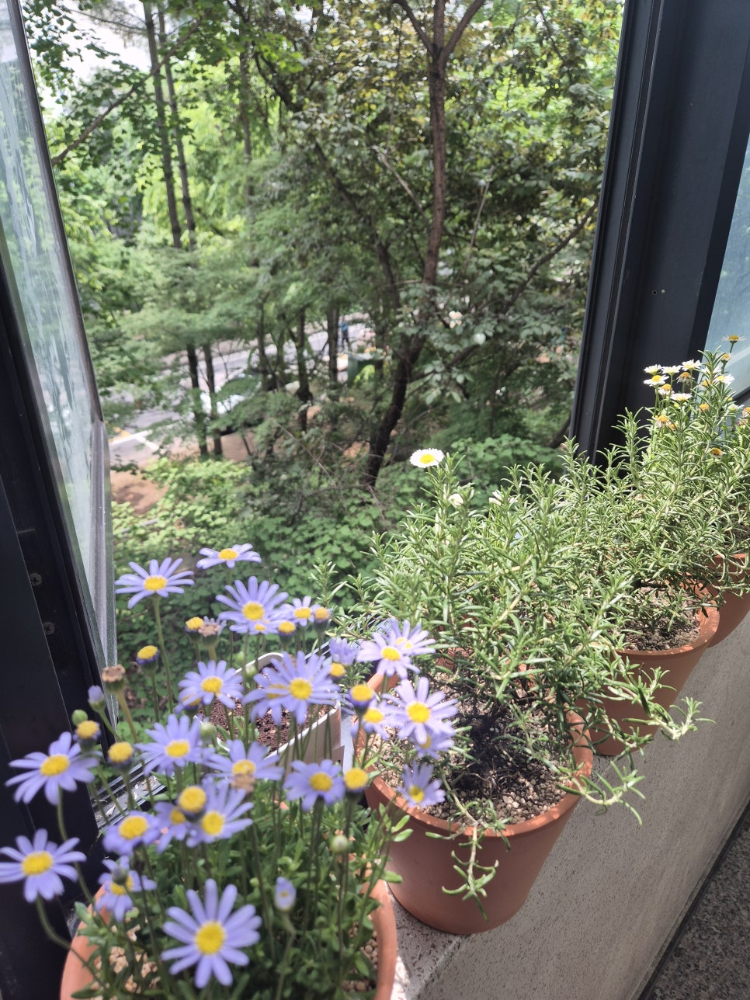
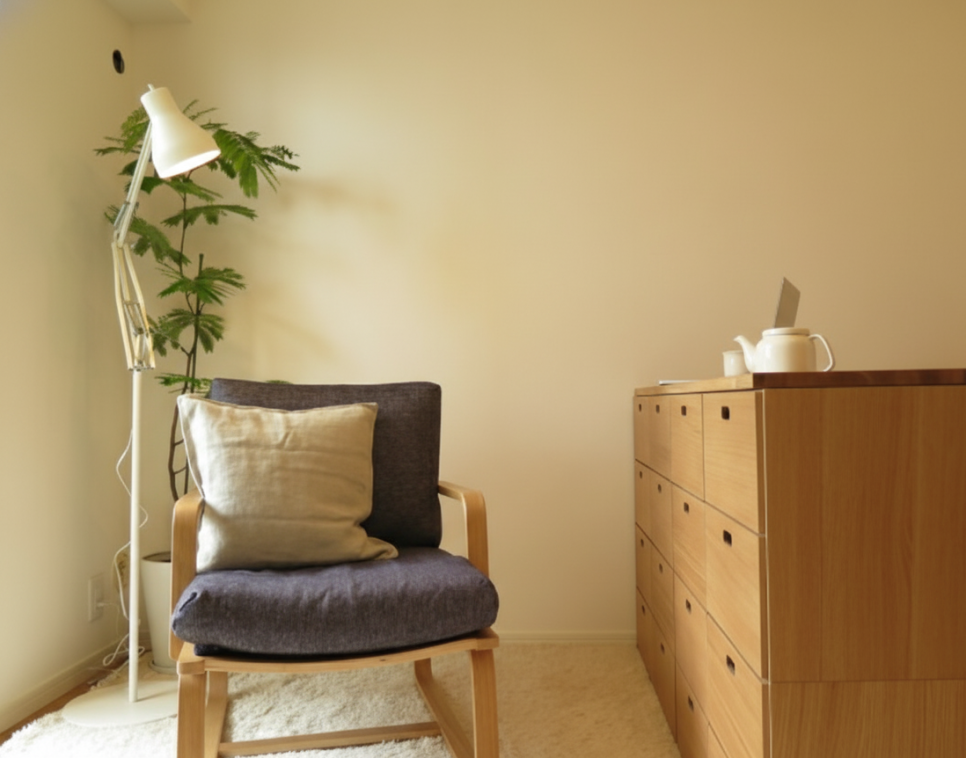
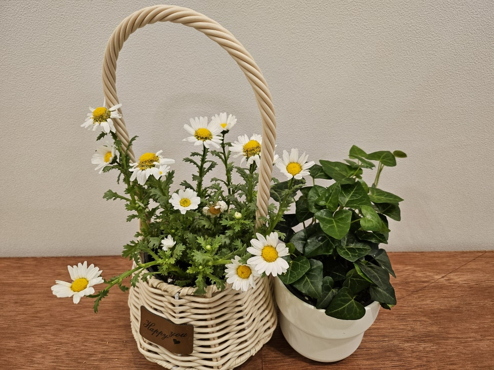

저는 심리상담이라는 이 길을 10년이 넘게 걸어가고 있습니다.
대학원에서 상담학을 공부하면서도, 이 일을 시작할 때만 해도 제가 사람들의 삶과 고통을 마주하며 분석하고 담아주는 일을 하게 될 줄은 몰랐습니다. 다행히 심리상담이라는 일은 제 성향과 성격에 딱 맞는 일이고, 보람도 큽니다.
하지만 그만큼 마음의 에너지를 많이 사용하는 작업이기도 합니다. 상담실 문을 닫고 나와도, 내담자들이 남기고 간 깊은 여운은 좀처럼 지워지지 않을 때가 있습니다.
저는 삶을 진지하고 섬세하게 다루는 성향의 사람입니다. 심리상담이라는 분야는 이런 진지함과 섬세함, 분석적인 성격이 잘 맞아야 할 수 있는 일인데, 다행히 저에겐 딱 맞는 일이어서 힘들다기보다는 사람의 마음을 깊이 만나고 느끼고 분석해야 하는 일이다 보니 종종 번아웃을 경험합니다.
오늘은 이 번아웃, 무기력에 대해서 이야기해 보려고 합니다.
"상담사도 무기력해질 때가 있나요?"
네, 정말 자주 있습니다.
그럴 때면 저는 무리하게 상담을 늘리지 않습니다. 지금 제 곁에 있는 내담자들과 긴 호흡으로 걷는 것에만 집중합니다. 스스로를 돌보지 못하면 내담자의 인생과 고통, 아픔을 담을 수 없기에, 10년 넘게 이 길을 걸어가면서 터득한 저만의 방법입니다.
아무것도 하기 싫은 날이면, 저는 짐을 챙겨 밖으로 나갑니다. 등산처럼 거창한 건 무리입니다. 그저 가까운 산책로를 걷거나, 초록이 우거진 숲을 느릿하게 걸을 뿐입니다.

그렇게 몸을 움직여 정신을 환기하고 나면, 헝클어졌던 마음도 제자리를 찾곤 합니다.
그때마다 영화 <리틀 포레스트>가 떠오릅니다. 지친 도시를 떠나 시골로 돌아온 혜원(김태리 배우)이 요리하고 텃밭을 일구며, 어린 시절 엄마가 해주었던 음식들을 손수 만들어 친구들과 나누는 모습에서 시골이 주는 편안함을 저도 느껴보고 싶어집니다.
"기다려. 기다려야 맛있는 곶감을 먹을 수 있어."
"모든 것은 타이밍이야."
"너를 이곳에 심고, 뿌리 내리게 하고 싶었어."
혜원의 엄마가 했던 이 말들은, 엄마가 없는 시골집에서 요리를 할 때마다 순간순간 떠오릅니다. 어쩌면 엄마의 그 말들은 단순한 요리법이 아니라 삶을 대하는 지혜였던 것 같습니다.
도시로 갔다가 다시 돌아온 혜원은, 전에는 이해되지 않고 싫었던 엄마의 말들을 고향집에서 하나씩 깨달아 갑니다. 타이밍이 되자, 엄마의 말을 이해할 수 있게 된 것입니다. 그렇게 혜원은 자신만의 숲을, 자신만의 삶을, 자신만의 속도로 살아내기 위한 준비를 다시 돌아온 고향집에서 찾게 됩니다.
이 영화를 저는 자주 꺼내 봅니다. 특히 번아웃이 왔을 때요.
혜원의 친구 재하(류준열 배우)는 이렇게 말합니다.
"그렇게 바쁘게 산다고 문제가 해결이 되나?"
번아웃이 오고 무기력해질 때는 누구에게나 있습니다. 그럴 때는 번아웃과 무기력을 해결하려고 발버둥 치기보다, 자신에게 맞는 쉼으로 잠깐 쉬어가는 것도 좋은 방법이라고 생각합니다.

영화 속 가을 장면에서, 갑자기 태풍이 와서 추수를 앞둔 벼들이 쓰러졌을 때 혜원의 고모는 이렇게 말합니다.
"하늘이 하는 일을 우리가 뭔 수로 대적하겠어."
농부인 고모는 묵묵히 쓰러진 벼를 다시 일으켜 세웠습니다. 예상하지 못한 인생의 태풍이 불어올 때, 우리는 다시 일어나 자신의 삶을 가꾸어 나갑니다. 그 일은 참 힘들지만, 다시 세워 나갈 수 있습니다.
오늘도 저는 저만의 숲을 가꾸어 갑니다. 어쩌면 우리 모두에게는 각자의 '작은 숲'이 필요한지도 모르겠습니다. 남들이 말하는 성공의 잣대, 매일 성공과 돈을 좇아야 하는 불안에서 잠시 벗어나 자신의 마음에 뿌리를 내리는 시간이 필요합니다.

당신도 오늘 하루 너무 애쓰셨습니다. 혹시 지금 무기력하다면, 그것은 당신이 그만큼 치열하게 살았다는 '충전 신호'일 것입니다.
그러니 너무 자책하지 마세요. 겨울이 깊어져야 곶감이 맛있어지는 타이밍이 오듯, 그렇게 각자의 속도로 다시 뿌리 내리면 됩니다.